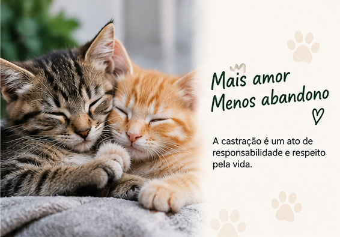
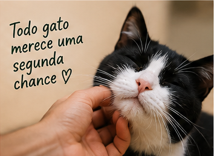
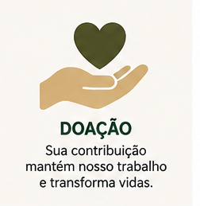
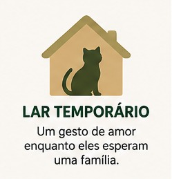

Nossos projetos
Conheça as principais frentes de atuação da Patas de Esperança.

Campanhas de doação
As doações ajudam a custear castrações, medicamentos, alimentação e outros cuidados necessários aos gatos comunitários.

Como realizar uma doação
Você pode contribuir financeiramente e ajudar a ampliar o número de animais atendidos pelas campanhas da ONG.

Lar temporário
Lares temporários oferecem segurança e cuidados aos animais enquanto aguardam atendimento ou uma família responsável.
Chamada para engajamento
Você também pode fazer parte dessa rede de proteção como voluntário.
Quero participar